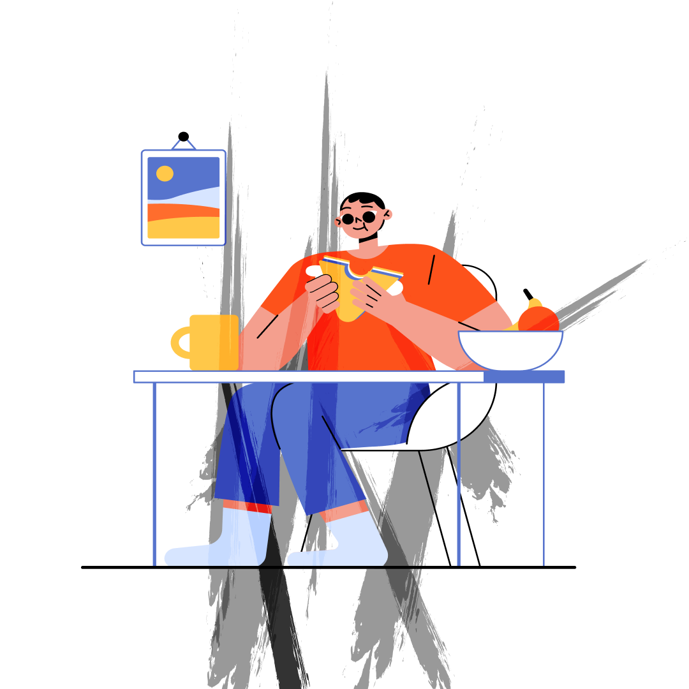

Log In
Sign Up
How to improve focus ?
Studies show and google says that a person can focus no more than 90 minutes without taking a break. But are you being able to focus even that long? If not, did you ever think that this could actually be an health issues that needs attention? Most of you haven't. The concept of focus is still very complicated to us because we seldom don't know when we've lost it. When the laws of motion have left our mind and when a music tune has taken it's place. In today's competitive world, we lose all if we lose focus. I'm sure you're expecting a solution for this trouble here itself, so here it is. Yes focus can be increased by various methods, one of them being figuring out what makes you lose it pretty often. A long process? Yes. Worthy of it's time? Obviously yes. So next time you think you're losing focus, think about usus, we're here to help you.
